器材库 > 35mm画幅可换镜头数码相机 > D810
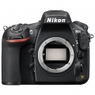
规格总览
产品类型
35mm画幅可换镜头数码相机
发布日期
2014-06-26
影像规格
影像传感器
CMOS
影像传感器尺寸
35.9×24.0mm
总像素
约3709万
有效像素
约3638万
影像处理器
EXPEED 4图像处理器
低通滤镜
无光学低通滤镜
静态图像尺寸
FX 影像区域，7360×4912,5520×3680,3680×24561.2X 影像区域，6144×4080,4608×3056,3072×2040DX 影像区域，4800×3200,3600×2400,2400×16005:4 影像区域 6144×4912,4608×3680,3072×2456
静态图像格式
JPEG, TIFF-RGB, NEF(RAW), NEF(RAW)+JPEG
静态图像质量
NEF（RAW）：12或14位，无损压缩、压缩或未压缩；JPEG：兼容JPEG-Baseline，压缩比（约）为精细（1：4），标准（1：8），基本（1：16）（文件大小优先）
短片尺寸
1920×1080；60p（逐行）、50p、30p、25p、24p 1280×720；60p、50p 60p、50p、30p、25p及24p时的实际帧频分别为59.94、50、29.97、25及23.976幅/秒；选项同时支持高和标准图像品质
短片格式
MPEG4-AVC/H.264
短片音效
线性PCM
除尘系统
清洁影像传感器、图像除尘参考数据（需要“捕影工匠”软件）
镜头和对焦
镜头卡口
Nikon F
兼容镜头
兼容AF尼克尔镜头，包括G型、E型、D型镜头（PC镜头受到某些限制）、DX镜头（使用DX 24×16 1.5×影像区域）、AI-P尼克尔镜头以及非CPU AI镜头（仅限于曝光模式A和M）。不能使用IX尼克尔镜头、用于F3AF的镜头以及非AI镜头。
对焦系统类型
Multi-CAM 3500FX
对焦点
51个对焦点（包括15个十字型感应器；11个感应器支持f/8）
对焦模式
单点AF、动态区域AF、3D跟踪和自动区域AF、组区域AF、MF
焦点锁定
半按快门释放按钮（单次伺服AF）或按下AE-L/AF-L按钮可锁定对焦
AF辅助灯
有
手动对焦
支持
曝光控制
测光系统
使用约91K（91000）像素RGB感应器的TTL曝光测光
测光模式
中央重点测光, 点测光, 矩阵测光
测光范围
0EV~20EV
曝光模式
P（程序自动曝光）, A（光圈优先自动曝光）, S（快门速度优先自动曝光）, M（手动测光曝光）
拍摄模式
S（单张拍摄）、CL（低速连拍）、CH（高速连拍）、Q（安静快门释放）、自拍、MUP（反光板弹起）、Qc（安静连拍快门释放）
快门类型
电子控制纵走式焦平面机械快门；电子前帘快门（适用于反光板弹起释放模式）
快门速度
1/8000-30秒（以1/3、1/2或1EV为步长进行微调）、B门、遥控B门、X250
闪光同步速度
X=1/250秒
曝光补偿
±5EV以1/3、1/2或1EV级调整
自动曝光锁
有
自动包围曝光
拍摄2至9幅，以1/3、1/2、2/3或1EV为步长；拍摄2至5幅，以2或3EV为步长
ISO感光度
ISO 64-12800，以1/3、1/2或1EV为步长进行微调。可在ISO 64的基础上约减少0.3、0.5、0.7或1EV（相当于ISO 32），或者在ISO 12800的基础上约增加0.3、0.5、0.7、1或2EV（相当于ISO 51200）；自动ISO感光度控制可用
白平衡
白炽灯, 闪光灯, 色温调节, 阴天, 荧光灯, 阴影, 自动, 预设白平衡, 白平衡包围, 晴天
自拍
10秒, 2秒, 5秒, 20秒, 以0.5、1、2 或3 秒为间隔曝光1~9 次
连拍
使用FX格式时，连拍速度可达约5幅/秒；使用DX格式时，连拍速度可达约7幅/秒
闪光灯
内置闪光灯
弹出式
闪光指数
12（m, ISO 100, 20°C）
闪光补偿
-3 至 +1EV以1/3、1/2或1EV级调整
取景器/显示屏
取景器
眼平五棱取景器
取景范围
100%
取景放大倍率
（50mm f/1.4镜头设为无穷远；屈光度为-1.0m-1）约0.7倍
屈光度调节范围
-3至+1m-1
对焦屏
B型光亮磨砂对焦屏Mark VIII，带有AF区域框（可显示取景网格）
反光镜
即时返回型
景深预视
有
LCD类型
TFT LCD
LCD尺寸
3.2英寸
LCD像素
约122.9万
视野率
100%
文件输入/输出
存储卡
CF, SD/SDHC, SDXC
数据接口
USB3.0 (micro B)
视频/音频接口
C型HDMI接口
电源
电池
一块EN-EL15锂离子可充电电池
续航能力
基于CIPA标准测量方式，当锂离子可充电电池EN-EL15进行一次充电后，每隔一张照片，闪光一次，D810可拍摄约1,200张静止图像，若不使用内置闪光灯，可拍摄约3,860张。
机身规格
材质
镁合金机身
颜色
黑色
尺寸
146×123×81.5mm
其它
配件端口
热靴, 脚架螺丝孔, 麦克风输入端子
附件
显示屏盖 BM-12、机身盖 BF-1B、锂离子可充电电池 EN-EL15（带端子盖）、电池充电器 MH-25a（墙式交流适配器，或随销售国家或地区的不同而型号和形状各不相同的各种电源线）、USB线卡、HDMI线夹、USB线UC-E22、背带 AN-DC12、ViewNX 2 安装光盘
Duke52572015-11-01 20:544.63 分
操作性 4.50功能性 4.50美观性 4.50趣味性 4.50耐用性 5.00性价比 4.50解像力 5.00色彩还原 4.50
月白风清2015-10-10 16:574.88 分
操作性 5.00功能性 5.00美观性 4.50趣味性 5.00耐用性 5.00性价比 4.50解像力 5.00色彩还原 5.00
fiat20092015-09-23 12:56
fiat20092015-09-22 13:144.63 分
操作性 5.00功能性 4.50美观性 5.00趣味性 4.50耐用性 4.50性价比 4.00解像力 5.00色彩还原 4.50
zhouxf2232015-09-17 08:43
caihuangsitong2015-08-24 20:284.38 分
操作性 4.00功能性 4.50美观性 4.00趣味性 4.00耐用性 4.00性价比 5.00解像力 5.00色彩还原 4.50
zhaoleslie2015-08-20 19:124.25 分
操作性 4.00功能性 5.00美观性 4.50趣味性 4.50耐用性 3.50性价比 5.00解像力 4.50色彩还原 3.00
大鹏19732015-07-05 16:494.69 分
操作性 5.00功能性 5.00美观性 4.50趣味性 5.00耐用性 3.00性价比 5.00解像力 5.00色彩还原 5.00
promise3232015-06-11 14:374.81 分
操作性 5.00功能性 5.00美观性 4.50趣味性 5.00耐用性 5.00性价比 4.50解像力 5.00色彩还原 4.50
现代十字军2015-05-19 09:094.69 分
操作性 5.00功能性 5.00美观性 3.50趣味性 4.50耐用性 5.00性价比 4.50解像力 5.00色彩还原 5.00
黑衣骑士2014-11-11 12:594.5 分
操作性 4.50功能性 4.50美观性 4.50趣味性 4.00耐用性 4.50性价比 4.50解像力 5.00色彩还原 4.50
满山尽是野草花2014-11-11 02:244.06 分
操作性 4.00功能性 4.00美观性 4.00趣味性 4.00耐用性 3.50性价比 4.00解像力 4.50色彩还原 4.50
rsgw402014-11-08 22:494.5 分
操作性 4.50功能性 4.50美观性 5.00趣味性 4.00耐用性 4.50性价比 4.00解像力 5.00色彩还原 4.50
南山砍2014-11-06 22:155 分
操作性 5.00功能性 5.00美观性 5.00趣味性 5.00耐用性 5.00性价比 5.00解像力 5.00色彩还原 5.00
CAF2014-11-05 23:474.88 分
操作性 5.00功能性 5.00美观性 5.00趣味性 5.00耐用性 5.00性价比 4.00解像力 5.00色彩还原 5.00
终南居士2014-11-05 23:354.94 分
操作性 5.00功能性 5.00美观性 5.00趣味性 5.00耐用性 5.00性价比 4.50解像力 5.00色彩还原 5.00
YYQ南山客2014-10-29 11:304.81 分
操作性 5.00功能性 5.00美观性 4.50趣味性 4.50耐用性 5.00性价比 4.50解像力 5.00色彩还原 5.00
侯卫东2014-10-14 22:514.69 分
操作性 5.00功能性 5.00美观性 4.00趣味性 4.50耐用性 5.00性价比 4.00解像力 5.00色彩还原 5.00
小毕2014-10-10 14:185 分
操作性 5.00功能性 5.00美观性 5.00趣味性 5.00耐用性 5.00性价比 5.00解像力 5.00色彩还原 5.00
xiaosonggo2014-10-07 06:254.88 分
操作性 5.00功能性 5.00美观性 5.00趣味性 4.00耐用性 5.00性价比 5.00解像力 5.00色彩还原 5.00
qiuyang2014-09-27 00:244.94 分
操作性 5.00功能性 5.00美观性 4.50趣味性 5.00耐用性 5.00性价比 5.00解像力 5.00色彩还原 5.00
艺道天成2014-09-20 00:445 分
操作性 5.00功能性 5.00美观性 5.00趣味性 5.00耐用性 5.00性价比 5.00解像力 5.00色彩还原 5.00
幽煌紫电2014-09-07 03:465 分
操作性 5.00功能性 5.00美观性 5.00趣味性 5.00耐用性 5.00性价比 5.00解像力 5.00色彩还原 5.00
dinosaur19992014-09-03 08:595 分
操作性 5.00功能性 5.00美观性 5.00趣味性 5.00耐用性 5.00性价比 5.00解像力 5.00色彩还原 5.00
嚓2014-08-31 22:134.63 分
操作性 4.50功能性 5.00美观性 4.50趣味性 4.50耐用性 4.50性价比 4.00解像力 5.00色彩还原 5.00
石头书生2014-08-29 13:015 分
操作性 5.00功能性 5.00美观性 5.00趣味性 5.00耐用性 5.00性价比 5.00解像力 5.00色彩还原 5.00
深拓澜2014-08-24 21:275 分
操作性 5.00功能性 5.00美观性 5.00趣味性 5.00耐用性 5.00性价比 5.00解像力 5.00色彩还原 5.00
elliotliu2014-08-21 00:100.5 分
操作性 0.50功能性 0.50美观性 0.50趣味性 0.50耐用性 0.50性价比 0.50解像力 0.50色彩还原 0.50
淡定41992014-08-10 14:464.75 分
操作性 5.00功能性 5.00美观性 4.50趣味性 5.00耐用性 4.50性价比 4.50解像力 5.00色彩还原 4.50
nikonjeep2014-08-01 09:314.81 分
操作性 4.50功能性 5.00美观性 5.00趣味性 5.00耐用性 5.00性价比 4.00解像力 5.00色彩还原 5.00
wingszero2014-07-23 03:09
mikewxy2014-07-09 11:074.63 分
操作性 5.00功能性 5.00美观性 4.50趣味性 4.50耐用性 4.50性价比 4.50解像力 4.50色彩还原 4.50
jerysys2014-07-08 22:584.13 分
操作性 4.00功能性 4.50美观性 3.50趣味性 4.00耐用性 4.50性价比 3.50解像力 5.00色彩还原 4.00
iyyzx2014-06-29 15:494.88 分
操作性 5.00功能性 5.00美观性 4.50趣味性 5.00耐用性 5.00性价比 4.50解像力 5.00色彩还原 5.00
rsgw402014-06-26 18:03
产品图 / 样片
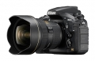
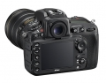
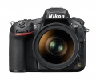
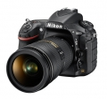
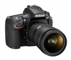
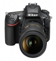
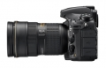
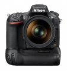
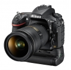
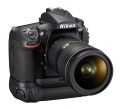
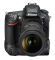
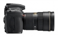
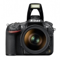
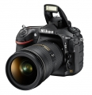
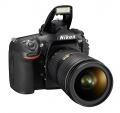
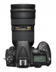
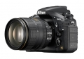
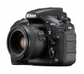
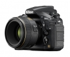
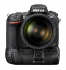
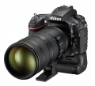
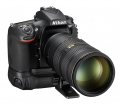
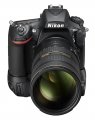
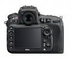
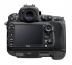
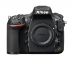
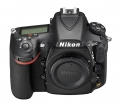
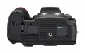
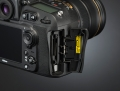
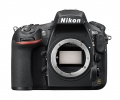
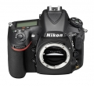
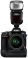
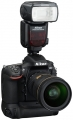
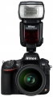
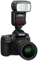
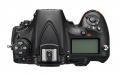
评测 / 相关文章
- 详细内容 （存档）
- 渐臻完善 尼康D810详细评测 （存档）
- ［试用］nikon D810的小花园 （存档）
- ［试用］尼康D810评测样张 （存档）
- ［资讯］尼康D810官方样片欣赏 （存档）
相关文章
- ［试用］nikon D810的小花园 （存档）
- ［试用］渐臻完善 尼康D810详细评测 （存档）
- ［试用］尼康D810评测样张 （存档）
- ［资讯］尼康发布FX格式数码单反相机D810 （存档）
- ［资讯］尼康D810官方样片欣赏 （存档）
- ［试用］绝美风光 尼康D810作品赏析 （原站已下线）
- ［试用］发烧在路上 用尼康拍人像 （原站已下线）
- ［试用］风光神器 选择尼康D810五大理由 （原站已下线）
- ［资讯］尼康发布D810新升级固件 （原站已下线）
- ［试用］尼康飞思打造新西兰春秋大片 （存档）